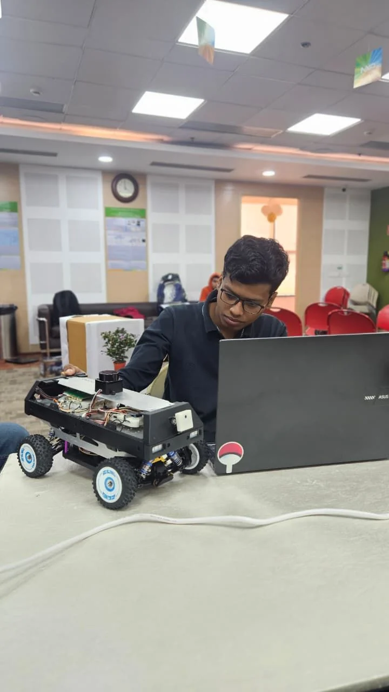
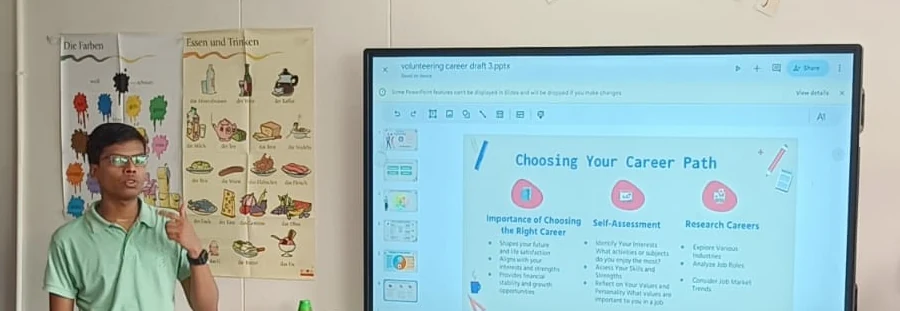
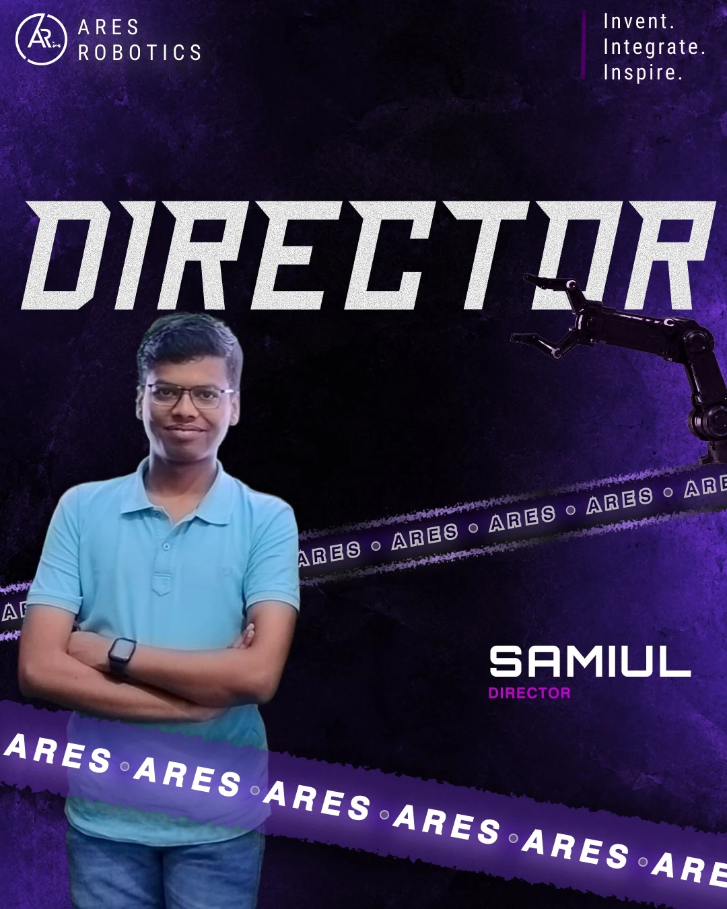

From cloud services down to silicon.
Samiul Seikh, NSUT final-year student, open to a six-month internship from January 2027.
- 8.05CGPA, B.Tech CSE at NSUT
- Top 14of 5,800+ teams, NXP warehouse challenge
- AIR 9,774JEE Advanced
- DirectorARES Robotics Society of NSUT
- Python
- FastAPI
- PostgreSQL
- C++
- Arduino
- Supabase
- Redis
- Docker
- Flutter
- PyTorch
- TensorFlow
- scikit-learn
- OpenCV
- ONNX
- PySpark
- Kaggle
- MQTT
- ESP32
- Raspberry Pi
- ROS
- C
- Linux
- Git
- GitHub
A few projects to start with.


Smart Assistive Cane
Ultrasonic cane with haptics and fall alerts.
3 sensorsplus an IMU for fall detection
The work, from cloud to silicon.
SynKitabA reader that follows you across devices.2026
Reads PDF, EPUB and CBZ across devices. Live now.
12.4 s to 5.6 sPDF write time in the Edit Arena
- FastAPI and PostgreSQL on Supabase.
- Book clubs, without spoilers.
- 119 pages, end to end in 42.6 s.
Python, FastAPI, PostgreSQL, Supabase, Flutter, WeasyPrint
Aqi-ForecastingAir-quality forecasts, served as an API.2026
Forecasts the next six hours of AQI from the last 48, with an ESP32 node feeding it.
48 h to 6 hlookback to forecast, from 37 features, Delhi 2025
- ZenML pipelines retrain from stored inference events, with PySpark doing the ETL.
- A FastAPI service in Docker Compose persists to PostgreSQL and has 13 test modules.
- On the node, a random forest fills in when the PMS7003 sensor fails.
PySpark, ZenML, FastAPI, Docker, PostgreSQL, TensorFlow, ESP32
Traffic InspectorA camera node that flags seven violations.2026
A hackathon team of three. I built the camera node; teammates built the backend and the dashboard.
7 violationsfrom one node: helmet, seatbelt, triple riding, wrong side, stop line, red light, parking
- Cheap checks run on every frame; classifiers and plate reading run once per stable track.
- Plates are read with PaddleOCR, voting across frames by confidence.
- Evidence goes to Supabase, and spools to disk and replays after an outage.
Python, YOLO, ONNX, PaddleOCR, Supabase, WebSockets
The repository is private.
DetailTrust-NetBrain-tumour MRI segmentation research.2026
Splits each MRI modality into smooth and detail parts, then corrects the detail. I am first author of the manuscript, in preparation.
0.738 vs 0.711mean region Dice against a raw-input baseline, 49 validation patients, preliminary
- A 16.9M-parameter 3D network built around a residual U-Net.
- Tested with missing modalities, noise and lower resolution.
- Kaggle runs resume from hash-verified checkpoints.
PyTorch, NiBabel, BraTS 2020, Kaggle GPU
DehazingHaze removal with a CNN and Mamba.2026
A team project: a CNN and a four-directional Mamba network with a physics head borrowed from AOD-Net.
29.99 dBPSNR, with 0.9904 SSIM, on RESIDE-OTS
- Trained end to end in PyTorch.
- Exported to ONNX so it runs on CPU or GPU.
PyTorch, Mamba, ONNX, OpenCV
IoT Home AutomationApp, lamp and RFID lock on ESP32-C3.2024
A Flutter app that finds ESP32-C3 devices on the network and controls them from anywhere.
28 patternson 122 WS2812B LEDs, with motion-reactive modes
- mDNS discovery at home, MQTT through HiveMQ Cloud when away.
- The lock opens by RFID card or from the app, and logs every entry.
- The lamp reacts to motion and takes over-the-air updates.
C++, ESP32-C3, Flutter, MQTT, mDNS, MFRC522
TableMindOffline voice assistant, Raspberry Pi 5.2026
The Raspberry Pi 5 thinks; the ESP32 listens and speaks. Nothing leaves the local network.
5 threadsin a fully offline voice pipeline, with sub-5 ms routing for smart-home commands
- Wake word, speech to text, a local LLM and speech synthesis stream over Wi-Fi UDP.
- Memory keeps six layers of conversation context.
- The ESP32 runs audio in FreeRTOS tasks, with an NTP-synced clock and a 48-pixel NeoPixel ring.
Raspberry Pi 5, ESP32, FreeRTOS, Ollama, faster-whisper, Piper
TI Range EstimatorA range model that runs on an ESP32.2025
A Random Forest range predictor compiled to C and run on an ESP32.
under 5 mson-device inference, from a model under 100 KB
- Trained on a physics-based synthetic dataset, with a leakage-safe split and 5-fold cross-validation.
- Median fallbacks keep it answering when a sensor fails.
scikit-learn, emlearn, C and C++, ESP32
Sign Language VocalizerSigns recognized, then spoken by an ESP32.2026
A Python recognizer reads Indian Sign Language; an ESP32 shows each sign on an OLED and says it aloud.
- MediaPipe, YOLO and fuzzy logic do the recognition.
- Each sign travels as a UDP packet, and the ESP32 speaks it with the Talkie library.
Python, MediaPipe, YOLO, UDP, ESP32, SSD1306
The clip has sound.
Smart Assistive CaneUltrasonic cane with haptics and fall alerts.
Three ultrasonic sensors and an IMU warn the user through haptics, and spot falls.
- Obstacle detection with directional haptic feedback.
- A Flutter app over Bluetooth logs obstacles and helps find the cane.
C and C++, Arduino Nano, MPU6050, HC-05, Flutter
Small ESP32 buildsSolar tracker, grid monitor, power monitor, TinyML.2026
Four course builds, each with its own sensing and control problem.
- Solar tracker: four LDRs, dual-axis servos, smoothing and a deadband so it does not hunt.
- Energy Guardian: an electricity-theft monitor with a web dashboard and live updates.
- Power monitor: voltage and current sensing, a relay and a web dashboard.
- Smart pot: a TinyML model on the ESP32 decides when to water.
ESP32, LDR, ZMPT101B, ACS712, TFLite
Gesture-controlled botHand-tilt control over a radio link.
An MPU6050 tracks the transmitter's tilt, and an NRF24L01 link drives the receiver bot.
- Arduino Uno on both ends.
- Motion becomes drive commands without a wire.
Arduino Uno, MPU6050, NRF24L01
Custom quadcopterA flight test: lift-off, hover, landing.
A custom quadcopter lifting off, hovering low and landing.
- The first eight seconds of a longer flight test.
Quadcopter, flight test


My internship at Lumee.
I led the AI and backend interns and wrote the device firmware too.
- Role
- Engineering Intern: backend, AI and embedded
- Company
- Lumee AI Enterprises, Mumbai
- When
- May to July 2026
- ~3 s to under 1 stime to first audio per query
- ~12×less voice bandwidth after the move to Opus
- 40 to 60×smaller camera frames, as grayscale JPEG
- ~80%of queries meant for the cheapest tier
Everything I built there
Backend and AI
- Led the AI and backend interns and built the routing core of a real-time voice and image AI backend (Python, FastAPI, PostgreSQL), serving a device and a web app from one engine.
- Removed under-load crashes with bounded concurrent rendering and by closing memory leaks.
- Added tiered routing, zero-LLM shortcuts and a solve-once cache, and put 5+ AI services (Gemini, Claude, speech to text, text to speech) behind one provider-agnostic layer.
Embedded firmware
- Built the device stack on an ESP32-S3 with camera, I2S microphone and speaker, SPI display and Wi-Fi, linked to the backend over WebSockets.
- Wrote the firmware as prioritized FreeRTOS tasks, with I2S DMA so audio is not starved by display writes or the network.
- Photos synced without audio dropouts after the move to grayscale JPEG.
About me.
I’m a final-year CSE student at NSUT. I build across the stack, from FastAPI backends to ESP32 firmware, and direct the ARES Robotics Society.
- Education
- B.Tech CSE at NSUT, 2023 to 2027, CGPA 8.05
- School
- CBSE XII 93.6% (2023), CBSE X 88.0% (2021)
- Looking for
- Internships from January 2027 in system software, embedded, backend or ML, then full-time from mid-2027.
- Currently
- Building SynKitab and writing the DetailTrust-Net paper.

The tools, by layer.
I’m happiest where two layers meet.
Software and backend
Python, FastAPI, PostgreSQL, Supabase, Docker, Flutter.
Data and ML
PyTorch, ONNX, OpenCV, scikit-learn, PySpark, ZenML.
Edge and IoT
ESP32, Raspberry Pi 5, MQTT, UDP, Opus, ROS2.
Firmware
C, C++, FreeRTOS, I2C, SPI, I2S, DMA.
Hardware
EasyEDA PCBs, NRF24 radios, servos, BLDC and ESCs.
Beyond the projects.
Director, ARES Robotics Society
Executive Committee 2024, Director 2026. Headed Innovision 2025, 100+ registrations.
NXP Autonomous Warehouse Challenge
Finalist: top 14 of 5,800+ teams, with an edge-AI navigation bot on ROS using SLAM.
FES NSUT AI FinTech Hackathon
Runner-up. Its NLP-to-SQL tool cut dead-stock lookup time by 60%.
JEE Advanced
All India Rank 9,774, top 1% of candidates.
NSS volunteer, NSUT
Seven or more career workshops for Class 10 to 12 students, about 80 in each.



